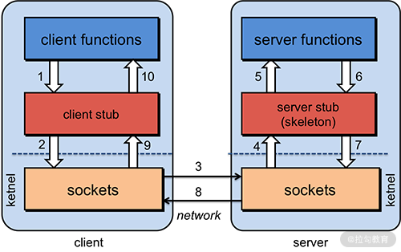

- 00 开篇词 为什么大厂面试必考操作系统？.md.html
- 00 课前必读 构建知识体系，可以这样做！.md.html
- 01 计算机是什么：“如何把程序写好”这个问题是可计算的吗？.md.html
- 02 程序的执行：相比 32 位，64 位的优势是什么？（上）.md.html
- 03 程序的执行：相比 32 位，64 位的优势是什么？（下）.md.html
- 04 构造复杂的程序：将一个递归函数转成非递归函数的通用方法.md.html
- 05 存储器分级：L1 Cache 比内存和 SSD 快多少倍？.md.html
- 05 (1) 加餐 练习题详解（一）.md.html
- 06 目录结构和文件管理指令：rm -rf 指令的作用是？.md.html
- 07 进程、重定向和管道指令：xargs 指令的作用是？.md.html
- 08 用户和权限管理指令： 请简述 Linux 权限划分的原则？.md.html
- 09 Linux 中的网络指令：如何查看一个域名有哪些 NS 记录？.md.html
- 10 软件的安装： 编译安装和包管理器安装有什么优势和劣势？.md.html
- 11 高级技巧之日志分析：利用 Linux 指令分析 Web 日志.md.html
- 12 高级技巧之集群部署：利用 Linux 指令同时在多台机器部署程序.md.html
- 12 (1)加餐 练习题详解（二）.md.html
- 13 操作系统内核：Linux 内核和 Windows 内核有什么区别？.md.html
- 14 用户态和内核态：用户态线程和内核态线程有什么区别？.md.html
- 15 中断和中断向量：Javajs 等语言为什么可以捕获到键盘输入？.md.html
- 16 WinMacUnixLinux 的区别和联系：为什么 Debian 漏洞排名第一还这么多人用？.md.html
- 16 (1)加餐 练习题详解（三）.md.html
- 17 进程和线程：进程的开销比线程大在了哪里？.md.html
- 18 锁、信号量和分布式锁：如何控制同一时间只有 2 个线程运行？.md.html
- 19 乐观锁、区块链：除了上锁还有哪些并发控制方法？.md.html
- 20 线程的调度：线程调度都有哪些方法？.md.html
- 21 哲学家就餐问题：什么情况下会触发饥饿和死锁？.md.html
- 22 进程间通信： 进程间通信都有哪些方法？.md.html
- 23 分析服务的特性：我的服务应该开多少个进程、多少个线程？.md.html
- 23 (1)加餐 练习题详解（四）.md.html
- 24 虚拟内存 ：一个程序最多能使用多少内存？.md.html
- 25 内存管理单元： 什么情况下使用大内存分页？.md.html
- 26 缓存置换算法： LRU 用什么数据结构实现更合理？.md.html
- 27 内存回收上篇：如何解决内存的循环引用问题？.md.html
- 28 内存回收下篇：三色标记-清除算法是怎么回事？.md.html
- 28 (1)加餐 练习题详解（五）.md.html
- 29 Linux 下的各个目录有什么作用？.md.html
- 30 文件系统的底层实现：FAT、NTFS 和 Ext3 有什么区别？.md.html
- 31 数据库文件系统实例：MySQL 中 B 树和 B+ 树有什么区别？.md.html
- 32 HDFS 介绍：分布式文件系统是怎么回事？.md.html
- 32 (1)加餐 练习题详解（六）.md.html
- 33 互联网协议群（TCPIP）：多路复用是怎么回事？.md.html
- 34 UDP 协议：UDP 和 TCP 相比快在哪里？.md.html
- 35 Linux 的 IO 模式：selectpollepoll 有什么区别？.md.html
- 36 公私钥体系和网络安全：什么是中间人攻击？.md.html
- 36 (1)加餐 练习题详解（七）.md.html
- 37 虚拟化技术介绍：VMware 和 Docker 的区别？.md.html
- 38 容器编排技术：如何利用 K8s 和 Docker Swarm 管理微服务？.md.html
- 39 Linux 架构优秀在哪里.md.html
- 40 商业操作系统：电商操作系统是不是一个噱头？.md.html
- 40 (1)加餐 练习题详解（八）.md.html
- 41 结束语 论程序员的发展——信仰、选择和博弈.md.html
- 捐赠
22 进程间通信： 进程间通信都有哪些方法？
这节课带给你的面试题目是：进程间通信都有哪些方法？
在上一讲中，我们提到过，凡是面试官问“什么情况下”的时候，面试官实际想听的是你经过理解，整理得到的认知。回答应该是概括的、简要的。而不是真的去列举每一种 case。
另外，面试官考察进程间通信，有一个非常重要的意义——进程间通信是架构复杂系统的基石。复杂系统往往是分成各种子系统、子模块、微服务等等，按照 Unix 的设计哲学，系统的每个部分应该是稳定、独立、简单有效，而且强大的。系统本身各个模块就像人的器官，可以协同工作。而这个协同的枢纽，就是我们今天的主题——进程间通信。
什么是进程间通信？
进程间通信（Intermediate Process Communication，IPC）。所谓通信就是交换数据。所以，狭义地说，就是操作系统创建的进程们之间在交换数据。 我们今天不仅讨论狭义的通信，还要讨论 IPC 更广泛的意义——程序间的通信。 程序可以是进程，可以是线程，可以是一个进程的两个部分（进程自己发送给自己），也可以是分布式的——总之，今天讨论的是广义的交换数据。
管道
之前我们在“07 | 进程、重定向和管道指令：xargs 指令的作用是？”中讲解过管道和命名管道。 管道提供了一种非常重要的能力，就是组织计算。进程不用知道有管道存在，因此管道的设计是非侵入的。程序员可以先着重在程序本身的设计，只需要预留响应管道的接口，就可以利用管道的能力。比如用shell执行MySQL语句，可能会这样：
进程1 | 进程2 | 进程3 | mysql -u... -p | 爬虫进程
我们可以由进程 1、进程 2、进程 3 计算出 MySQL 需要的语句，然后直接通过管道执行。MySQL经过计算将结果传给一个爬虫进程，爬虫就开始工作。MySQL并不是设计用于管道，爬虫进程也不是设计专门用于管道，只是程序员恰巧发现可以这样用，完美地解决了自己的问题，比如：用管道构建一个微型爬虫然后把结果入库。
我们还学过一个词叫作命名管道。命名管道并没有改变管道的用法。相比匿名管道，命名管道提供了更多的编程手段。比如：
进程1 > namedpipe
进程2 > namedpipe
上面的程序将两个进程的临时结果都同时重定向到 namedpipe，相当于把内容合并了再找机会处理。再比如说，你的进程要不断查询本地的 MySQL，也可以考虑用命名管道将查询传递给 MySQL，再用另一个命名管道传递回来。这样可以省去和 localhost 建立 TCP 3 次握手的时间。 当然，现在数据库都是远程的了，这里只是一个例子。
管道的核心是不侵入、灵活，不会增加程序设计负担，又能组织复杂的计算过程。
本地内存共享
同一个进程的多个线程本身是共享进程内存的。 这种情况不需要特别考虑共享内存。如果是跨进程的线程（或者理解为跨进程的程序），可以考虑使用共享内存。内存共享是现代操作系统提供的能力， Unix 系操作系统，包括 Linux 中有 POSIX 内存共享库——shmem。（如果你感兴趣可以参考网页中的内容，这里不做太深入地分析。）Linux 内存共享库的实现原理是以虚拟文件系统的形式，从内存中划分出一块区域，供两个进程共同使用。看上去是文件，实际操作是内存。
共享内存的方式，速度很快，但是程序不是很好写，因为这是一种侵入式的开发，也就是说你需要为此撰写大量的程序。比如如果修改共享内存中的值，需要调用 API。如果考虑并发控制，还要处理同步问题等。因此，只要不是高性能场景，进程间通信通常不考虑共享内存的方式。
本地消息/队列
内存共享不太好用，因此本地消息有两种常见的方法。一种是用消息队列——现代操作系统都会提供类似的能力。Unix 系可以使用 POSIX 标准的 mqueue。另一种方式，就是直接用网络请求，比如 TCP/IP 协议，也包括建立在这之上的更多的通信协议（这些我们在下文中的“远程调用”部分详细讲解）。
本质上，这些都是收/发消息的模式。进程将需要传递的数据封装成格式确定的消息，这对写程序非常有帮助。程序员可以根据消息类型，分门别类响应消息；也可以根据消息内容，触发特殊的逻辑操作。在消息体量庞大的情况下，也可以构造生产者队列和消费者队列，用并发技术进行处理。
远程调用
远程调用（Remote Procedure Call，RPC）是一种通过本地程序调用来封装远程服务请求的方法。
程序员调用 RPC 的时候，程序看上去是在调用一个本地的方法，或者执行一个本地的任务，但是后面会有一个服务程序（通常称为 stub），将这种本地调用转换成远程网络请求。 同理，服务端接到请求后，也会有一个服务端程序（stub），将请求转换为一个真实的服务端方法调用。

客户端服务端的通信
你可以观察上面这张图，表示客户端和服务端通信的过程，一共是 10 个步骤，分别是：
- 客户端调用函数（方法）；
- stub 将函数调用封装为请求；
- 客户端 socket 发送请求，服务端 socket 接收请求；
- 服务端 stub 处理请求，将请求还原为函数调用；
- 执行服务端方法；
- 返回结果传给 stub；
- stub 将返回结果封装为返回数据；
- 服务端 socket 发送返回数据，客户端 socket 接收返回数据；
- 客户端 socket 将数据传递给客户端 stub；
- 客户端 stub 把返回数据转义成函数返回值。
RPC 调用过程有很多约定， 比如函数参数格式、返回结果格式、异常如何处理。还有很多细粒度的问题，比如处理 TCP 粘包、处理网络异常、I/O 模式选型——其中有很多和网络相关的知识比较复杂，你可以参考我将在拉勾教育上线的《计算机网络》专栏。
上面这些问题比较棘手，因此在实战中通常的做法是使用框架。比如 Thrift 框架（Facebook 开源）、Dubbo 框架（阿里开源）、grpc（Google 开源）。这些 RPC 框架通常支持多种语言，这需要一个接口定义语言支持在多个语言间定义接口（IDL）。
RPC 调用的方式比较适合微服务环境的开发，当然 RPC 通常需要专业团队的框架以支持高并发、低延迟的场景。不过，硬要说 RPC 有额外转化数据的开销（主要是序列化），也没错，但这不是 RPC 的主要缺点。RPC 真正的缺陷是增加了系统间的耦合。当系统主动调用另一个系统的方法时，就意味着在增加两个系统的耦合。长期增加 RPC 调用，会让系统的边界逐渐腐化。这才是使用 RPC 时真正需要注意的东西。
消息队列
既然 RPC 会增加耦合，那么怎么办呢——可以考虑事件。事件不会增加耦合，如果一个系统订阅了另一个系统的事件，那么将来无论谁提供同类型的事件，自己都可以正常工作。系统依赖的不是另一个系统，而是某种事件。如果哪天另一个系统不存在了，只要事件由其他系统提供，系统仍然可以正常运转。
实现事件可以用消息队列。具体这块架构技术我不再展开，你如果感兴趣可以课下去研究 Doman Drive Design 这个方向的知识。
另一个用到消息队列的场景是纯粹大量数据的传输。 比如日志的传输，中间可能还会有收集、清洗、筛选、监控的节点，这就构成了一个庞大的分布式计算网络。
总的来说，消息队列是一种耦合度更低，更加灵活的模型。但是对系统设计者的要求也会更高，对系统本身的架构也会有一定的要求。具体场景的消息队列有 Kafka，主打处理 feed；RabbitMQ、ActiveMQ、 RocketMQ 等主打分布式应用间通信（应用解耦）。
总结
那么通过这节课的学习，你现在可以尝试来回答本节关联的面试题目：进程间通信都有哪些方法？
【解析】 你可以从单机和分布式角度给面试管阐述。
- 如果考虑单机模型，有管道、内存共享、消息队列。这三个模型中，内存共享程序最难写，但是性能最高。管道程序最好写，有标准接口。消息队列程序也比较好写，比如用发布/订阅模式实现具体的程序。
- 如果考虑分布式模型，就有远程调用、消息队列和网络请求。直接发送网络请求程序不好写，不如直接用实现好的 RPC 调用框架。RPC 框架会增加系统的耦合，可以考虑 消息队列，以及发布订阅事件的模式，这样可以减少系统间的耦合。
© 2019 - 2023 Liangliang Lee. Powered by gin and hexo-theme-book.